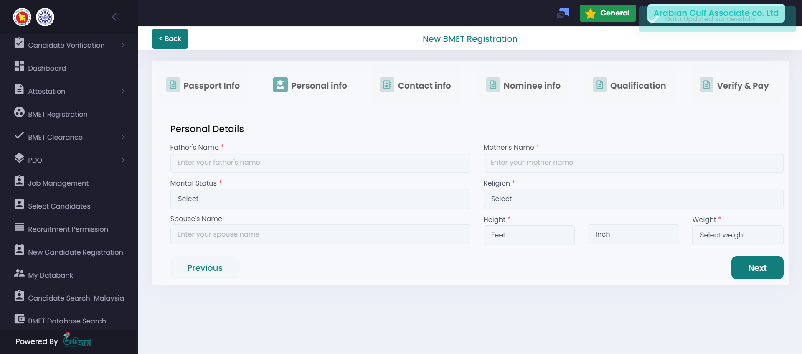
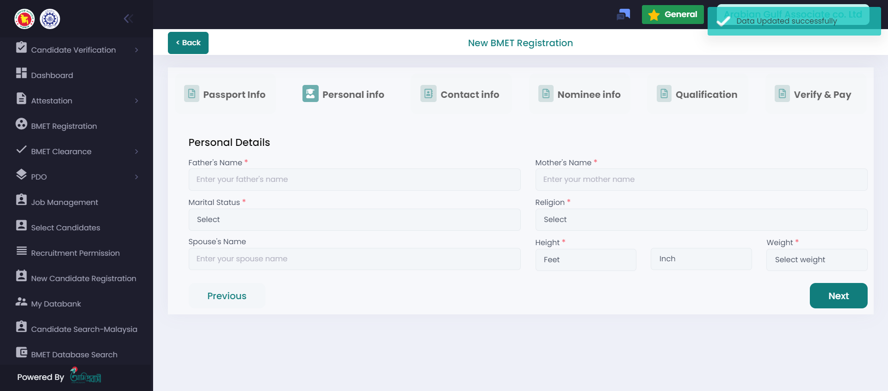
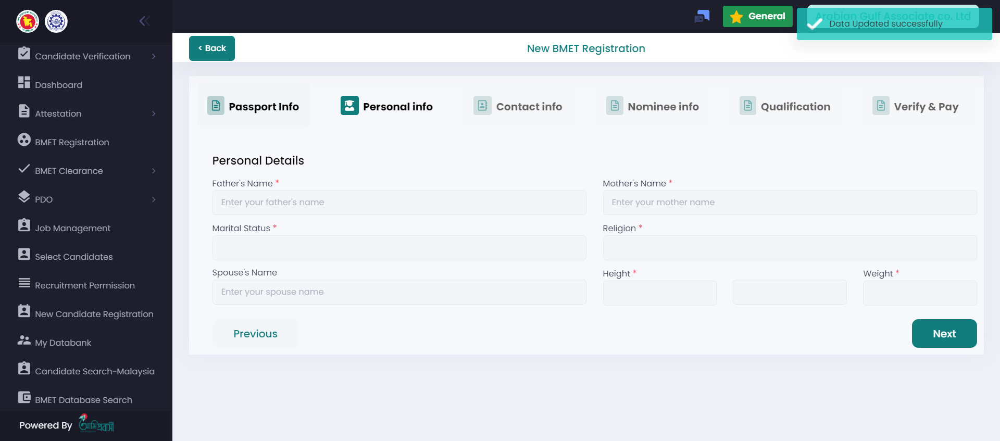
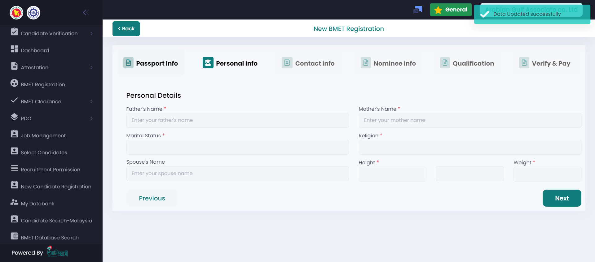
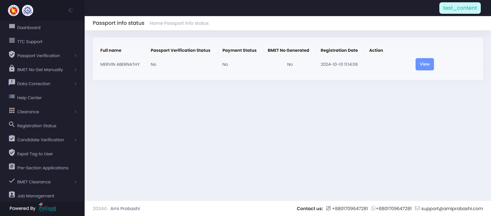
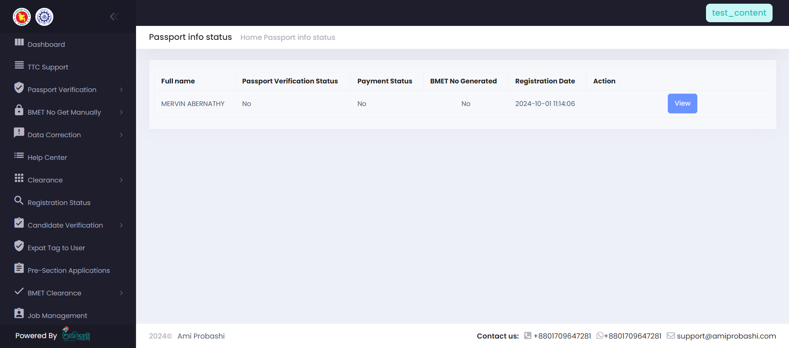

-
Test For BMET Registration Functionality
11:12:58 AM / 00:01:09:839 Fail
Test For BMET Registration Functionality
10.01.2024 11:12:58 AM 10.01.2024 11:14:08 AM 00:01:09:839 · #test-id=1FailVerify BMET Registration FunctionalityGiven user has logged into the portalWhen user clicks on BMET buttonAnd user click new BMET registrationAnd user upload passportAnd user inputs passport numberAnd user inputs mobile numberAnd user inputs passport informationAnd user inputs full nameAnd user select genderAnd user select birthday districtAnd user click next buttonAnd user inputs personal informationAnd user inputs contact infoStep skippedAnd user inputs nominee infoStep skippedAnd user inputs qualification infoStep skippedAnd user select desire country with preferred jobStep skippedAnd user click next button form Qualification pageStep skippedThen user should see pending statusStep skippedStepDefinations.TTC_Loging_Step.takeScraenshotOnFailure(io.cucumber.java.Scenario)Verify BMET Registration FunctionalityStepDefinations.PdoSupportLogin_step.takeScraenshotOnFailure(io.cucumber.java.Scenario)Verify BMET Registration FunctionalityStepDefinations.PdoPrincipalLogin_Step.takeScraenshotOnFailure(io.cucumber.java.Scenario)Verify BMET Registration Functionality StepDefinations.LoginStep.takeScraenshotOnFailure(io.cucumber.java.Scenario)Verify BMET Registration Functionality
StepDefinations.LoginStep.takeScraenshotOnFailure(io.cucumber.java.Scenario)Verify BMET Registration Functionality StepDefinations.DGLoging_step.takeScraenshotOnFailure(io.cucumber.java.Scenario)Verify BMET Registration FunctionalityStepDefinations.BracLoging_Step.takeScraenshotOnFailure(io.cucumber.java.Scenario)Verify BMET Registration Functionality
StepDefinations.DGLoging_step.takeScraenshotOnFailure(io.cucumber.java.Scenario)Verify BMET Registration FunctionalityStepDefinations.BracLoging_Step.takeScraenshotOnFailure(io.cucumber.java.Scenario)Verify BMET Registration Functionality StepDefinations.ApprovalLoginStep.takeScraenshotOnFailure(io.cucumber.java.Scenario)Verify BMET Registration Functionality
StepDefinations.ApprovalLoginStep.takeScraenshotOnFailure(io.cucumber.java.Scenario)Verify BMET Registration Functionality
-
Test Log Out Functionality
11:14:08 AM / 00:02:05:576 Fail
Test Log Out Functionality
10.01.2024 11:14:08 AM 10.01.2024 11:16:14 AM 00:02:05:576 · #test-id=28PassVerify Logout FunctionalityGiven user has logged into the portalWhen user clicks on logout buttonFailVerify Logout FunctionalityGiven user has logged into the approval portalWhen user clicks on logout buttonStep skippedStepDefinations.TTC_Loging_Step.takeScraenshotOnFailure(io.cucumber.java.Scenario)StepDefinations.PdoSupportLogin_step.takeScraenshotOnFailure(io.cucumber.java.Scenario)StepDefinations.PdoPrincipalLogin_Step.takeScraenshotOnFailure(io.cucumber.java.Scenario)StepDefinations.LoginStep.takeScraenshotOnFailure(io.cucumber.java.Scenario)StepDefinations.DGLoging_step.takeScraenshotOnFailure(io.cucumber.java.Scenario)StepDefinations.BracLoging_Step.takeScraenshotOnFailure(io.cucumber.java.Scenario)StepDefinations.ApprovalLoginStep.takeScraenshotOnFailure(io.cucumber.java.Scenario) -
Test BMET Registration Status Approve
11:14:55 AM / 00:00:59:573 Fail
Test BMET Registration Status Approve
10.01.2024 11:14:55 AM 10.01.2024 11:15:54 AM 00:00:59:573 · #test-id=39FailVerify BMET Registration Approve FunctionalityGiven user has logged into the approval portalWhen user click new registration status buttonAnd user input passport numberAnd user click search buttonAnd user click manual varification buttonAnd user select verify optionStep skippedAnd user click confirm buttonStep skippedThen user should see passport verification status yesStep skippedStepDefinations.TTC_Loging_Step.takeScraenshotOnFailure(io.cucumber.java.Scenario)Verify BMET Registration Approve Functionality StepDefinations.PdoSupportLogin_step.takeScraenshotOnFailure(io.cucumber.java.Scenario)Verify BMET Registration Approve Functionality
StepDefinations.PdoSupportLogin_step.takeScraenshotOnFailure(io.cucumber.java.Scenario)Verify BMET Registration Approve Functionality StepDefinations.PdoPrincipalLogin_Step.takeScraenshotOnFailure(io.cucumber.java.Scenario)Verify BMET Registration Approve Functionality
StepDefinations.PdoPrincipalLogin_Step.takeScraenshotOnFailure(io.cucumber.java.Scenario)Verify BMET Registration Approve Functionality StepDefinations.LoginStep.takeScraenshotOnFailure(io.cucumber.java.Scenario)Verify BMET Registration Approve Functionality
StepDefinations.LoginStep.takeScraenshotOnFailure(io.cucumber.java.Scenario)Verify BMET Registration Approve Functionality StepDefinations.DGLoging_step.takeScraenshotOnFailure(io.cucumber.java.Scenario)Verify BMET Registration Approve FunctionalityStepDefinations.BracLoging_Step.takeScraenshotOnFailure(io.cucumber.java.Scenario)Verify BMET Registration Approve Functionality
StepDefinations.DGLoging_step.takeScraenshotOnFailure(io.cucumber.java.Scenario)Verify BMET Registration Approve FunctionalityStepDefinations.BracLoging_Step.takeScraenshotOnFailure(io.cucumber.java.Scenario)Verify BMET Registration Approve Functionality StepDefinations.ApprovalLoginStep.takeScraenshotOnFailure(io.cucumber.java.Scenario)Verify BMET Registration Approve Functionality
StepDefinations.ApprovalLoginStep.takeScraenshotOnFailure(io.cucumber.java.Scenario)Verify BMET Registration Approve Functionality
-
Test For BMET Registration Payment Functionality
11:16:14 AM / 00:00:00:099 Fail
Test For BMET Registration Payment Functionality
10.01.2024 11:16:14 AM 10.01.2024 11:16:14 AM 00:00:00:099 · #test-id=66FailVerify BMET Registration PaymentGiven user has logged into the portalWhen user clicks on BMET buttonStep skippedAnd user input passport number on search fieldStep skippedAnd user select checkbox for paymentStep skippedAnd user click make payment button for payStep skippedAnd user select a vendor for paymentStep skippedAnd user select payment policy checkboxStep skippedAnd user click pay buttonStep skippedStepDefinations.TTC_Loging_Step.takeScraenshotOnFailure(io.cucumber.java.Scenario)StepDefinations.PdoSupportLogin_step.takeScraenshotOnFailure(io.cucumber.java.Scenario)StepDefinations.PdoPrincipalLogin_Step.takeScraenshotOnFailure(io.cucumber.java.Scenario)StepDefinations.LoginStep.takeScraenshotOnFailure(io.cucumber.java.Scenario)StepDefinations.DGLoging_step.takeScraenshotOnFailure(io.cucumber.java.Scenario)StepDefinations.BracLoging_Step.takeScraenshotOnFailure(io.cucumber.java.Scenario)StepDefinations.ApprovalLoginStep.takeScraenshotOnFailure(io.cucumber.java.Scenario)
-
org.openqa.selenium.NoSuchElementException
1 tests
org.openqa.selenium.NoSuchElementException
1 failedStatus Timestamp TestName Fail 11:15:41 AM And user click manual varification button Test BMET Registration Status Approve.Verify BMET Registration Approve Functionality.And user click manual varification button -
org.openqa.selenium.ElementNotInteractableException
1 tests
org.openqa.selenium.ElementNotInteractableException
1 failedStatus Timestamp TestName Fail 11:14:02 AM And user inputs personal information Test For BMET Registration Functionality.Verify BMET Registration Functionality.And user inputs personal information -
org.openqa.selenium.WebDriverException
16 tests
org.openqa.selenium.WebDriverException
16 failedStatus Timestamp TestName Fail 11:15:54 AM Given user has logged into the approval portal Test Log Out Functionality.Verify Logout Functionality.Given user has logged into the approval portalFail 11:16:14 AM StepDefinations.TTC_Loging_Step.takeScraenshotOnFailure(io.cucumber.java.Scenario) Test Log Out Functionality.Verify Logout Functionality.StepDefinations.TTC_Loging_Step.takeScraenshotOnFailure(io.cucumber.java.Scenario)Fail 11:16:14 AM StepDefinations.PdoSupportLogin_step.takeScraenshotOnFailure(io.cucumber.java.Scenario) Test Log Out Functionality.Verify Logout Functionality.StepDefinations.PdoSupportLogin_step.takeScraenshotOnFailure(io.cucumber.java.Scenario)Fail 11:16:14 AM StepDefinations.PdoPrincipalLogin_Step.takeScraenshotOnFailure(io.cucumber.java.Scenario) Test Log Out Functionality.Verify Logout Functionality.StepDefinations.PdoPrincipalLogin_Step.takeScraenshotOnFailure(io.cucumber.java.Scenario)Fail 11:16:14 AM StepDefinations.LoginStep.takeScraenshotOnFailure(io.cucumber.java.Scenario) Test Log Out Functionality.Verify Logout Functionality.StepDefinations.LoginStep.takeScraenshotOnFailure(io.cucumber.java.Scenario)Fail 11:16:14 AM StepDefinations.DGLoging_step.takeScraenshotOnFailure(io.cucumber.java.Scenario) Test Log Out Functionality.Verify Logout Functionality.StepDefinations.DGLoging_step.takeScraenshotOnFailure(io.cucumber.java.Scenario)Fail 11:16:14 AM StepDefinations.BracLoging_Step.takeScraenshotOnFailure(io.cucumber.java.Scenario) Test Log Out Functionality.Verify Logout Functionality.StepDefinations.BracLoging_Step.takeScraenshotOnFailure(io.cucumber.java.Scenario)Fail 11:16:14 AM StepDefinations.ApprovalLoginStep.takeScraenshotOnFailure(io.cucumber.java.Scenario) Test Log Out Functionality.Verify Logout Functionality.StepDefinations.ApprovalLoginStep.takeScraenshotOnFailure(io.cucumber.java.Scenario)Fail 11:16:14 AM Given user has logged into the portal Test For BMET Registration Payment Functionality.Verify BMET Registration Payment.Given user has logged into the portalFail 11:16:14 AM StepDefinations.TTC_Loging_Step.takeScraenshotOnFailure(io.cucumber.java.Scenario) Test For BMET Registration Payment Functionality.Verify BMET Registration Payment.StepDefinations.TTC_Loging_Step.takeScraenshotOnFailure(io.cucumber.java.Scenario)Fail 11:16:14 AM StepDefinations.PdoSupportLogin_step.takeScraenshotOnFailure(io.cucumber.java.Scenario) Test For BMET Registration Payment Functionality.Verify BMET Registration Payment.StepDefinations.PdoSupportLogin_step.takeScraenshotOnFailure(io.cucumber.java.Scenario)Fail 11:16:14 AM StepDefinations.PdoPrincipalLogin_Step.takeScraenshotOnFailure(io.cucumber.java.Scenario) Test For BMET Registration Payment Functionality.Verify BMET Registration Payment.StepDefinations.PdoPrincipalLogin_Step.takeScraenshotOnFailure(io.cucumber.java.Scenario)Fail 11:16:14 AM StepDefinations.LoginStep.takeScraenshotOnFailure(io.cucumber.java.Scenario) Test For BMET Registration Payment Functionality.Verify BMET Registration Payment.StepDefinations.LoginStep.takeScraenshotOnFailure(io.cucumber.java.Scenario)Fail 11:16:14 AM StepDefinations.DGLoging_step.takeScraenshotOnFailure(io.cucumber.java.Scenario) Test For BMET Registration Payment Functionality.Verify BMET Registration Payment.StepDefinations.DGLoging_step.takeScraenshotOnFailure(io.cucumber.java.Scenario)Fail 11:16:14 AM StepDefinations.BracLoging_Step.takeScraenshotOnFailure(io.cucumber.java.Scenario) Test For BMET Registration Payment Functionality.Verify BMET Registration Payment.StepDefinations.BracLoging_Step.takeScraenshotOnFailure(io.cucumber.java.Scenario)Fail 11:16:14 AM StepDefinations.ApprovalLoginStep.takeScraenshotOnFailure(io.cucumber.java.Scenario) Test For BMET Registration Payment Functionality.Verify BMET Registration Payment.StepDefinations.ApprovalLoginStep.takeScraenshotOnFailure(io.cucumber.java.Scenario)
-
@bmetRpay
1 tests
@bmetRpay
1 failedStatus Timestamp TestName Fail 11:16:14 AM Verify BMET Registration Payment Test For BMET Registration Payment Functionality.Verify BMET Registration Payment -
@approval
1 tests
@approval
1 failedStatus Timestamp TestName Fail 11:14:55 AM Verify BMET Registration Approve Functionality Test BMET Registration Status Approve.Verify BMET Registration Approve Functionality -
@logout
1 tests
@logout
1 passedStatus Timestamp TestName Pass 11:14:08 AM Verify Logout Functionality Test Log Out Functionality.Verify Logout Functionality -
@approvlogout
1 tests
@approvlogout
1 failedStatus Timestamp TestName Fail 11:15:54 AM Verify Logout Functionality Test Log Out Functionality.Verify Logout Functionality -
@bmetR
1 tests
@bmetR
1 failedStatus Timestamp TestName Fail 11:12:58 AM Verify BMET Registration Functionality Test For BMET Registration Functionality.Verify BMET Registration Functionality
Started
Oct 1, 2024 11:12:58 AM
Ended
Oct 1, 2024 11:16:14 AM
Features Passed
0
Features Failed
4
Features
Scenarios
Steps
Timeline
Tags
| Name | Passed | Failed | Skipped | Others | Passed % |
|---|---|---|---|---|---|
| @bmetRpay | 0 | 1 | 0 | 0 | 0% |
| @approval | 0 | 1 | 0 | 0 | 0% |
| @logout | 1 | 0 | 0 | 0 | 100% |
| @approvlogout | 0 | 1 | 0 | 0 | 0% |
| @bmetR | 0 | 1 | 0 | 0 | 0% |